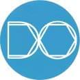
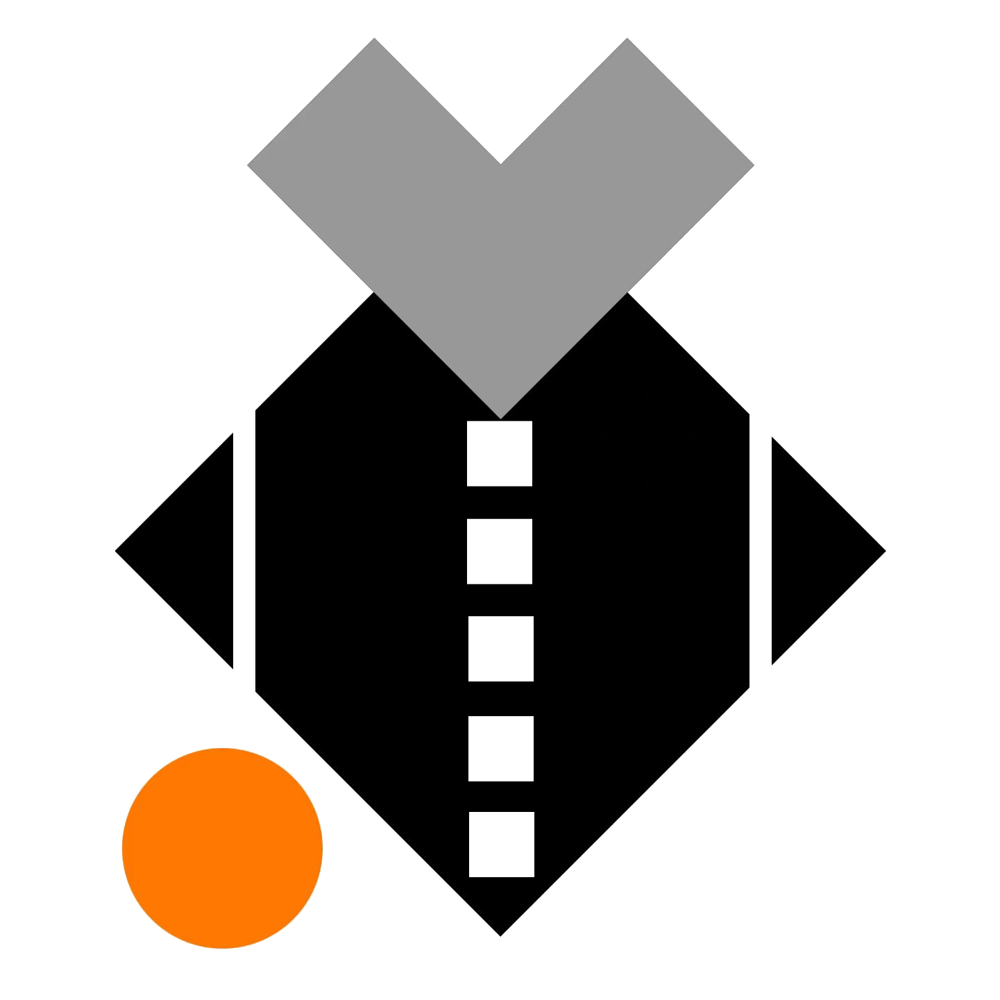

收藏 个人项目 个人GitHub我的代码仓库 AI工具 AIHubPro搜罗AI行业信息 标小智智能生成logo CSM根据图片生成3D模型 AI工业 设序科技AI + CAD 西井科技AI+自动驾驶 Icon FeatherFeatherIcon矢量图形 iconfont图标+插画+动效+字体 ikun-ui音容犹在 svg-path-editor在线编辑预览svg path 前端工具 Luckysheet模仿excel的开源库